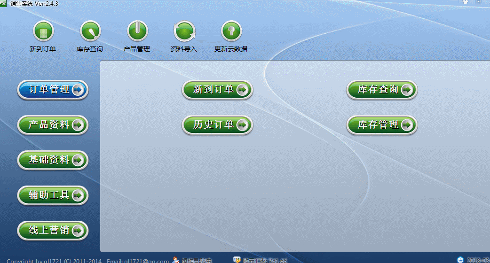
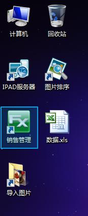
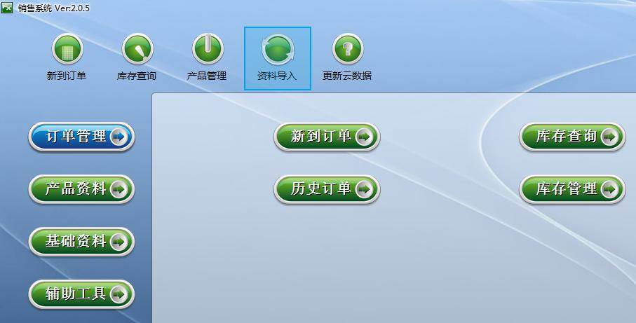
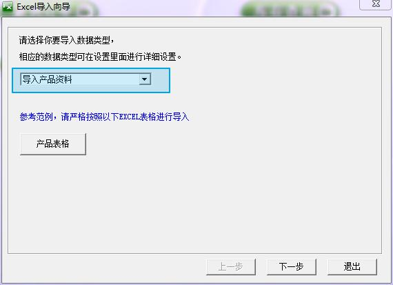
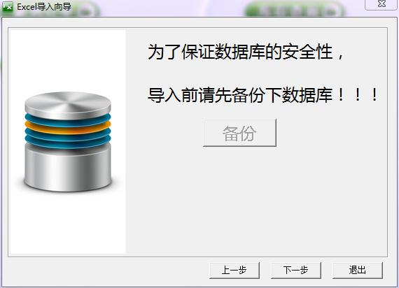
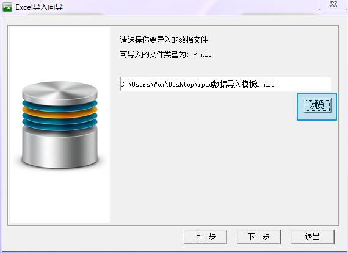
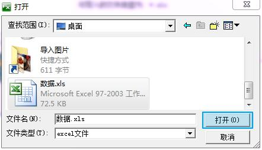
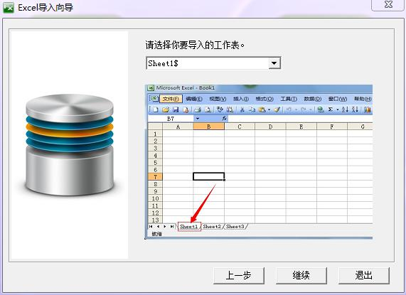
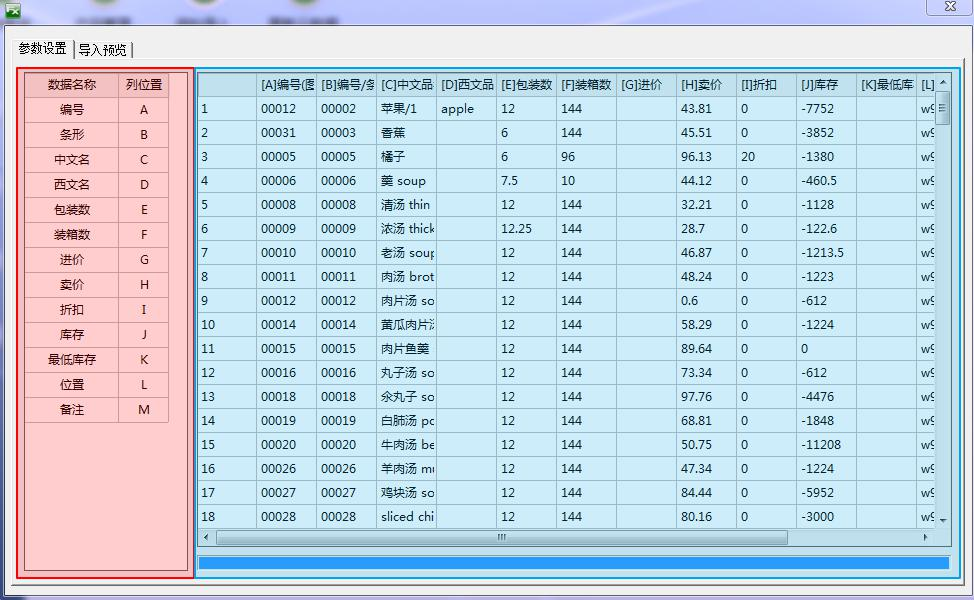

产品数据批量导入教程
2017-02 FreeX
动画教程

第一步 打开资料导入
点击界面上方的资料导入[如图片中蓝色区域所示]。

第二步 选择导入的类型
点击选择导入的类型[如图片中蓝色区域所示]，如果没特殊要求，可以直接进入下一步。

第三步 备份
按钮无法按的情况下，可以打开后台进行备份，然后进入下一步。

第四步 选择数据文件
点击浏览，选择Excel文件。

第五步 打开选中的Excel文件
打开已经选中的数据文件，需要您提前按照模版的要求，制作好数据。或者是其他程序导出的数据。

第六步 工作表选择
选择工作表，一般情况下是默认的第一个，但是也有特殊情况，请留意一下。

第七步 核实数据
查看左边红色区域的列名和右边蓝色区域的列名是否一致，防止导入出现问题，这一步非常关键！

第八步 导入预览
预览数据是否正确，如果不正确，千万不要导入，请重新按照上面的步骤仔细导入。数据正确无误之后，点击确认并且导入数据。
